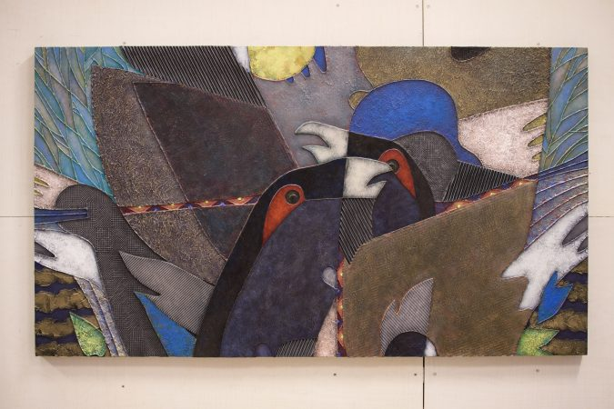

Произведение в разделе «Живопись и графика»
ГЛУХАРИ. Серия СНЫ ПРИРОДЫ.
ТЕХНИКА: живопись, смешанная техника — контуры, акрил, мастики, керамика, аппликация, картон.
РАЗМЕР: 90х160 см.
Глухари улетели из мастерской в новый дом. На Север. Видимо, там им лучше. Как говорил Аристотель, все вещи мира ищут своё собственное органичное место и именно этот поиск определяет всю динамику мироздания. Мне лично кажется, что произведения искусства среди всего сущего находятся в этом смысле в привилегированном положении, потому как шансов найти своё место у них гораздо больше, чем у других вещей и даже, чем у людей. Ведь в искусстве, и «природа», и «свобода», и «человеческое» сливаются в каком-то естественном единстве, чего не случается нигде более. Так что, в чём-то, глухари на картине гораздо более свободны, чем глухари в лесу. Странная мысль? Ну на первый взгляд да, но если подумать…